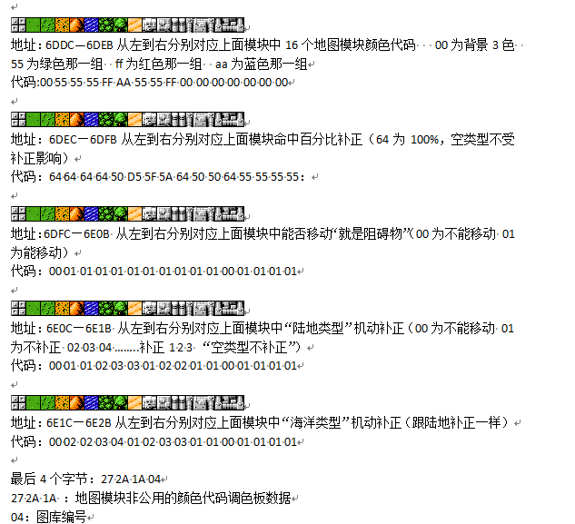
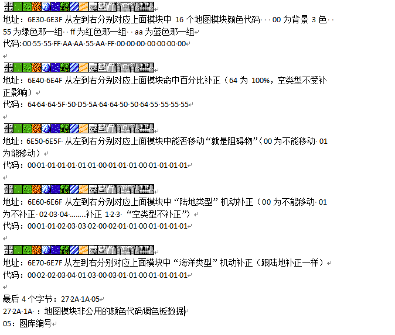
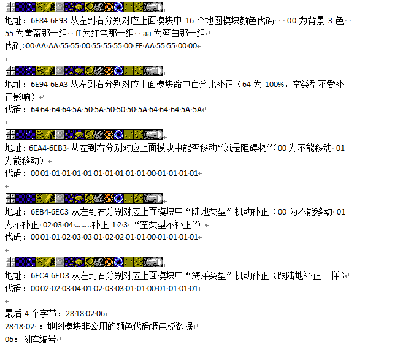
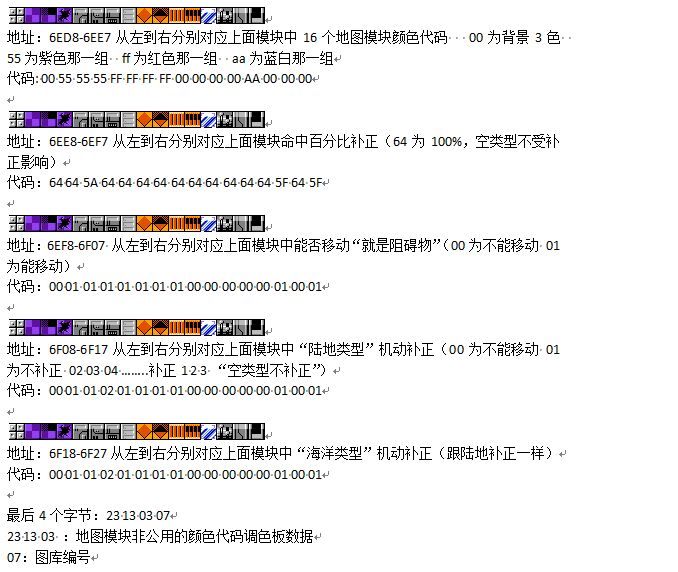

地形即组成战场地图的地图模块，在原版中一个有4个位图，每个位图包含了不同的地图模块，所有相关参数在下面我都会一一列举。
关于位图：位图指的是地图模块的图像信息（包括颜色）赋予一系列参数之后用来构成游戏的关卡地图的地图模块元素的总和（一个位图一共为16个地图模块）。
地形一共包含三个重要参数-命中补正、地形阻碍、机动补正，其中命中补正为对攻击方造成减命中的效果（空类型不会受到补正的影响），详细数值参照下图；地形阻碍为是否可穿越、停留的逻辑判定，00表示可以，01表示不可以；机动补正为对机体移动力的修正值，详细数值参考下图（空类型不会受到补正的影响）。
特殊地形：在原版中特殊地形分为两类-加血站、地图事件（包含移动不能、商店、逃脱点等）。加血站有明确的地形标识，在前三个位图中为倒数第六个（如下图所示），最后一个位图没有加血站；地图事件没有特殊的地形标识，也就是说商店可以不是原版那些是商店图标的地形；地图事件与事件同理，例如原版第十四关的移动不能和第十六关的逃脱点。具体的地图事件说明请参考修改器使用手册-主界面-地图事件。
地形所包含的所有参数如下图所示：
位图A如下所示：

===============================================================================
位图B如下所示：

===============================================================================
位图C如下所示：

===============================================================================
位图D如下所示：
